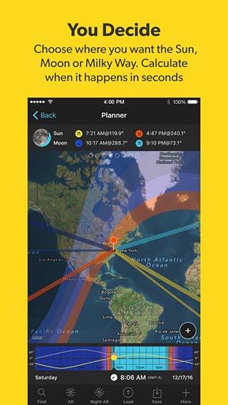
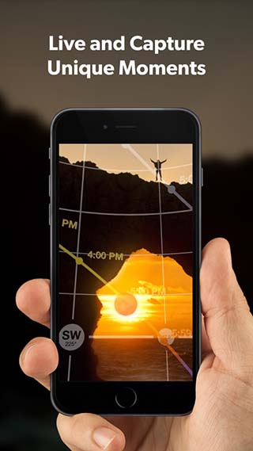

PhotoPills 不只是查日出日落——翻出五个藏得真深的杀招
大多数人把 PhotoPills 当摄影日历用。我把它翻了个底朝天，发现五个官方不怎么提的隐藏功能：反向搜索、红点黑点标记法、超焦距一键算、AR 实景叠加、延时场景预设，每一个都能让你的出片效率翻倍。
你以为 photopills官网 就是个查日出日落月相的摄影日历 App？我之前也是这么想的，直到某次在黄山光明顶蹲日落，旁边一个老法师掏出手机，在 Planner 地图上戳了两下就跟我说「明天 17:42 太阳会刚好从迎客松左上方落下去」——不是大概方位，是精准到度的位置。
那天我从photopills下载下来把这个 App 翻了个底朝天，发现藏着五个大多数人不知道、官方也没在首页大张旗鼓宣传的杀招。每一个都不是锦上添花，是真能帮你省时间、少走弯路。
反向搜索：给一个构图，反过来算哪天拍
这个功能藏得真深——默认界面所有人都在看「今天太阳从哪升起」，但没人注意到 Planner 地图右下角那个反向箭头。点进去之后逻辑完全反过来：你先在地图上定好你要拍的目标物（比如一栋大楼的顶端），再定好太阳应该在它后面的什么位置（比如刚好擦着楼顶、或者左上方 30°），App 会自动搜索未来 10 年里所有满足这个构图条件的日期和精确时间。
我之前想拍超级月亮从上海中心顶上擦过的画面，用正向搜索翻了三个星期的月相表也没对上。反向搜索输入「目标：上海中心顶端 + 月亮方位 270° + 高度角 5°」，三秒钟就出来一个下个月凌晨 4:17 的窗口。
什么人用得上：想拍「XX 从 XX 后面升起」的城市风光、超级月亮特写、日食月食特效的摄影师。什么人可以无视：只拍日常人像、室内的，这个功能对你确实没用。
红点黑点双标记法：不只是拉一条方位线
大多数人打开 Planner 就是放个蓝点看太阳方位线有没有穿过目标。但 PhotoPills 其实有两套标记：红点是你站的位置，黑点是你要拍的主体。放完两个点之后，App 不只是给你方位角，还会自动算出：红点到黑点的水平距离、两点之间的高差、用多少焦距能刚好框住主体（FoV 计算器联动）。
有次我在武夷山想拍玉女峰的日落剪影，红点放观景台、黑点放玉女峰顶端，App 告诉我距离 183 米、高差 62 米、用 135mm 中焦刚好。现场架脚架按这个焦距拧上去，构图一分不差。

什么人用得上：需要精准控制构图焦距的风光、建筑摄影师。提醒一下——红点黑点放反了（红点是目标、黑点是自己），FoV 计算会完全反过来，现场对不上焦距别骂 App，检查一下标记顺序。
超焦距一键出结果：风光党再也不用心算公式
DoF 计算器（景深计算器）是很多人知道的，但里面藏着一个一键算超焦距的按钮。风光党拍大场景最头疼的就是对焦到多少米能让从脚边的草到远处的山都清晰。公式是 f² / (c × N)——焦距平方除以（弥散圆乘以光圈值），但全画幅弥散圆是 0.03mm、APS-C 是 0.02mm，不同机型还不一样，没人愿意现场算。
在 DoF 计算器里选好你的相机机型（App 内置了主流机型的弥散圆预设）、焦距、光圈，App 直接在屏幕上方显示一个 Hyperfocal Distance 数值——比如 24mm f/8 全画幅，超焦距约 3 米。对焦到 3 米处，从 1.5 米到无穷远全部清晰。
photopills文档里提了这个功能吗？提了，但藏在景深计算器的结果里，不是一个显眼的独立按钮。很多人用了两年 DoF 计算器还没注意到那一行小字。
Day AR：太阳轨迹直接叠在手机摄像头上
现场架脚架的时候，你是不是经常拿着罗盘转来转去，想确认太阳的方位线有没有真的穿过你预期的位置？打开 Day AR（增强现实），手机摄像头直接变成取景器——太阳、月亮、银河的轨迹线会实时叠在画面上，拖动时间条还能预览接下来一小时光线怎么移动。
我上次在青海湖边蹲银河，提前一周用 Planner 算好银河中心会在凌晨 2:15 从黑马河方向升起。到现场架好脚架，打开 Day AR 一扫——银河线真的就从那个方向冒出来，连银心的位置都对得上。之前靠肉眼估银河方位，十次有三次偏了至少 20°。

唯一的坑：AR 需要手机有陀螺仪和指南针，少数老机型的指南针不准，AR 叠上去会有几度偏差。出发前先开 AR 转一圈检查一下方位线对不对。
延时计算器：输入你想要的成片，App 帮你算一切
很多人拍延时就是瞎调间隔——日出 5 秒、云层 10 秒，凭感觉来。但拍银河延时你就不能凭感觉了：24fps 的成片想拍 10 秒需要 240 张，单张曝光 25 秒，间隔得设成 30 秒，总共要等 2 小时。少等 20 分钟成片就不够 10 秒。
延时计算器藏在摄影计算器列表里，你可以输入四个参数里的任意三个：拍摄间隔、拍摄张数、拍摄时长、成片时长，App 自动算第四个。更贴心的是它内置了场景建议表——日出日落 2~5 秒、云层 5~15 秒、车流人流 1~2 秒、星轨 15~30 秒，不用自己瞎蒙。
拍植物生长延时的时候最有用：输入「成片 20 秒 + 间隔 30 分钟」，App 告诉你要拍 480 张、等 10 天——这时候你就知道该不该寄存在朋友家的阳台。
PhotoPills 其实是个被低估的工具，大多数人只用了它 20% 的功能。把这五个杀招用透，你规划拍摄的时间能从几小时缩到几分钟，现场出错的概率也大幅下降。我现在每次出门拍风光，先把反向搜索和红点黑点标记跑一遍，现场基本就是架脚架按参数拧环的事儿了。
这套摄影规划工具的完整资料和参数文档在国内访问可能有点慢，相关说明我在三个仓库都做了同步：GitHub 镜像、Gitee 备份、GitCode 备份，按你的网络环境选一个看就行。